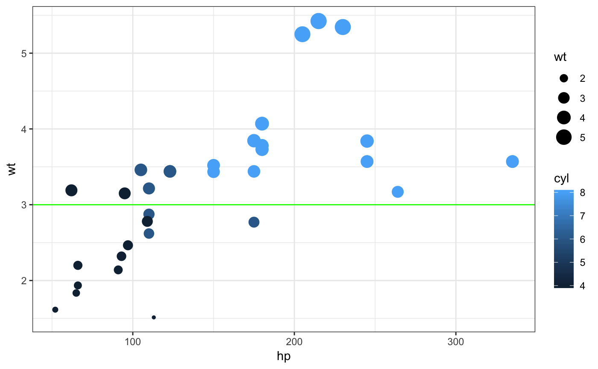
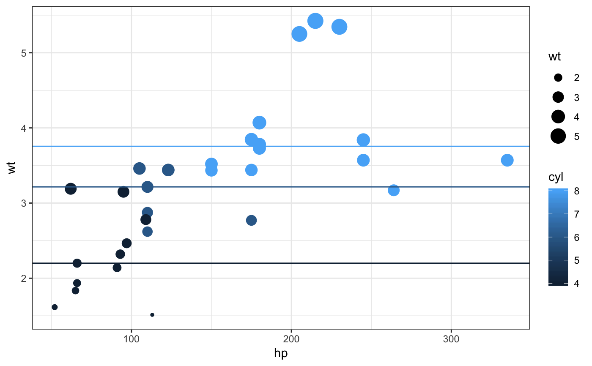
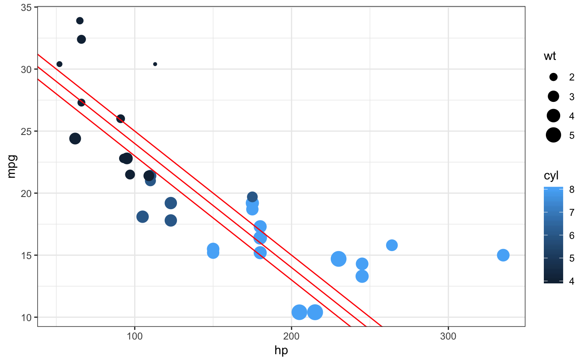
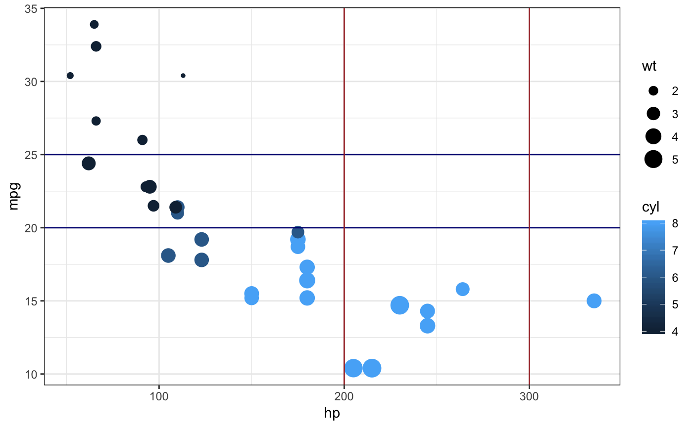
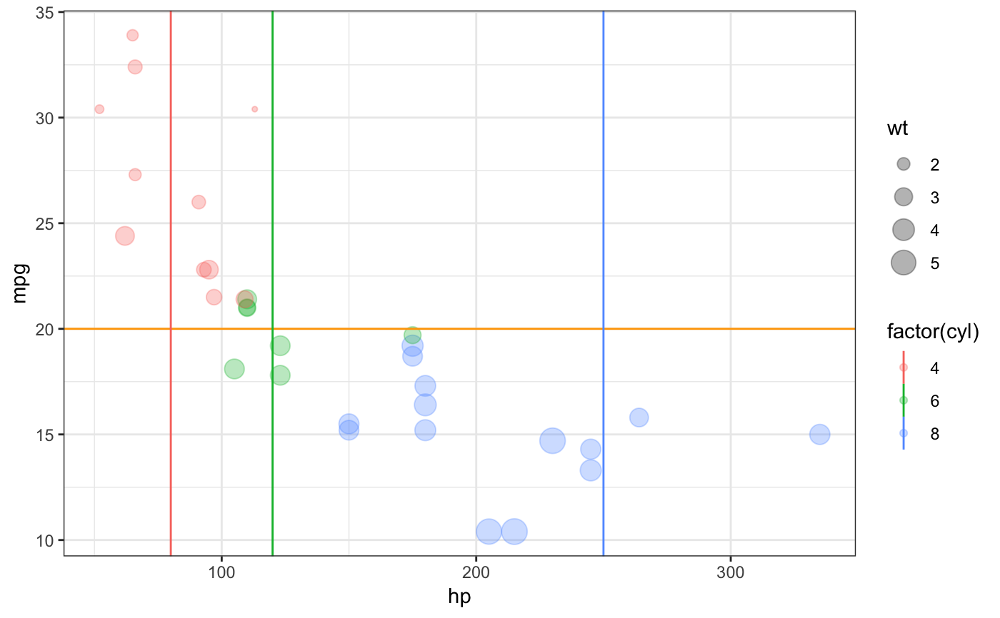
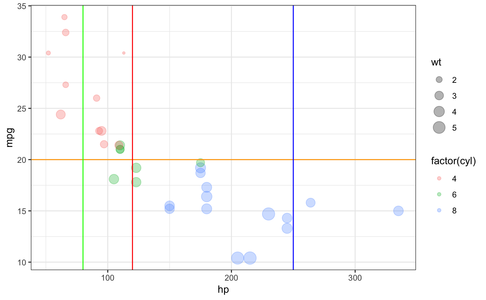
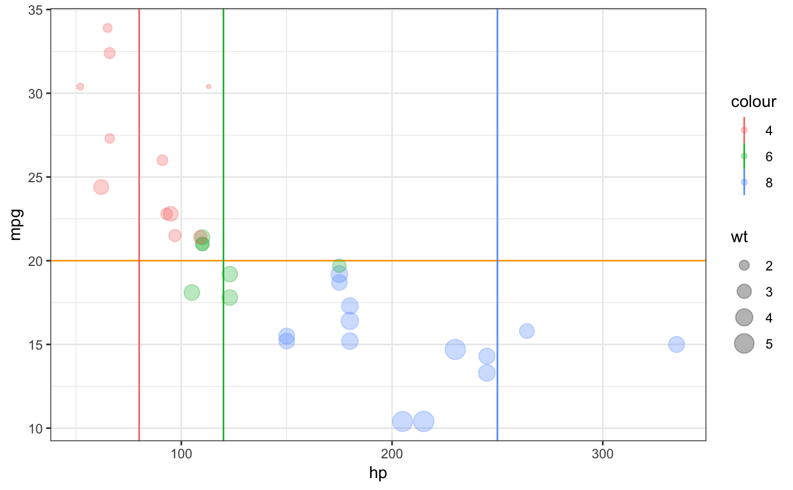

These functions create layers that display lines described i various ways. Unlike most
of the plotting functions in ggformula, these functions do not take a formula
as input for describing positional attributes of the plot.
gf_abline(object = NULL, gformula = NULL, data = NULL, slope, intercept, color, size, linetype, alpha, xlab, ylab, title, subtitle, caption, show.legend = NA, show.help = NULL, inherit = FALSE, environment = parent.frame(), ...) gf_hline(object = NULL, gformula = NULL, data = NULL, yintercept, color, size, linetype, alpha, xlab, ylab, title, subtitle, caption, show.legend = NA, show.help = NULL, inherit = FALSE, environment = parent.frame(), ...) gf_vline(object = NULL, gformula = NULL, data = NULL, xintercept, color, size, linetype, alpha, xlab, ylab, title, subtitle, caption, show.legend = NA, show.help = NULL, inherit = FALSE, environment = parent.frame(), ...) gf_coefline(object = NULL, coef = NULL, model = NULL, ...)
Arguments
| object | When chaining, this holds an object produced in the earlier portions of the chain. Most users can safely ignore this argument. See details and examples. |
|---|---|
| gformula | Must be |
| data | The data to be displayed in this layer. There are three options: If A A |
| slope | Parameters that control the
position of the line. If these are set, |
| intercept | Parameters that control the
position of the line. If these are set, |
| color | A color or a formula used for mapping color. |
| size | A numeric size or a formula used for mapping size. |
| linetype | A linetype (numeric or "dashed", "dotted", etc.) or a formula used for mapping linetype. |
| alpha | Opacity (0 = invisible, 1 = opaque). |
| xlab | Label for x-axis. See also |
| ylab | Label for y-axis. See also |
| title | Title, sub-title, and caption for the plot.
See also |
| subtitle | Title, sub-title, and caption for the plot.
See also |
| caption | Title, sub-title, and caption for the plot.
See also |
| show.legend | logical. Should this layer be included in the legends?
|
| show.help | If |
| inherit | A logical indicating whether default attributes are inherited. |
| environment | An environment in which to look for variables not found in |
| ... | Additional arguments. Typically these are
(a) ggplot2 aesthetics to be set with |
| yintercept | Parameters that control the
position of the line. If these are set, |
| xintercept | Parameters that control the
position of the line. If these are set, |
| coef | A numeric vector of coefficients. |
| model | A model from which to extract coefficients. |
See also
Examples
mtcars2 <- df_stats( wt ~ cyl, data = mtcars, median_wt = median) gf_point(wt ~ hp, size = ~ wt, color = ~ cyl, data = mtcars) %>% gf_abline(slope = ~ 0, intercept = ~ median_wt, color = ~ cyl, data = mtcars2)gf_point(wt ~ hp, size = ~ wt, color = ~ cyl, data = mtcars) %>% gf_abline(slope = 0, intercept = 3, color = "green", data = NA)gf_point(wt ~ hp, size = ~ wt, color = ~ cyl, data = mtcars) %>% gf_hline(yintercept = ~ median_wt, color = ~ cyl, data = mtcars2)gf_point(mpg ~ hp, color = ~ cyl, size = ~ wt, data = mtcars) %>% gf_abline(color="red", slope = -0.10, intercept = 35)gf_point(mpg ~ hp, color = ~ cyl, size = ~ wt, data = mtcars) %>% gf_abline(color = "red", slope = ~ slope, intercept = ~ intercept, data = data.frame(slope = -0.10, intercept = 33:35))# We can set the color of the guidelines while mapping color in other layers gf_point(mpg ~ hp, color = ~ cyl, size = ~ wt, data = mtcars) %>% gf_hline(color = "navy", yintercept = c(20, 25), data = NA) %>% gf_vline(color = "brown", xintercept = c(200, 300), data = NA)# If we want to map the color of the guidelines, it must work with the # scale of the other colors in the plot. gf_point(mpg ~ hp, size = ~ wt, data = mtcars, alpha = 0.3) %>% gf_hline(color = ~ "horizontal", yintercept = ~ c(20, 25), data = NA) %>% gf_vline(color = ~ "vertical", xintercept = ~ c(100, 200, 300), data = NA)gf_point(mpg ~ hp, size = ~ wt, color = ~ factor(cyl), data = mtcars, alpha = 0.3) %>% gf_hline(color = "orange", yintercept = 20, data = NA) %>% gf_vline(color = ~ c("4", "6", "8"), xintercept = ~ c(80, 120, 250), data = NA)gf_point(mpg ~ hp, size = ~ wt, color = ~ factor(cyl), data = mtcars, alpha = 0.3) %>% gf_hline(color = "orange", yintercept = 20, data = NA) %>% gf_vline(color = c("green", "red", "blue"), xintercept = c(80, 120, 250), data = NA)# reversing the layers requires using inherit = FALSE gf_hline(color = "orange", yintercept = 20, data = NA) %>% gf_vline(color = ~ c("4", "6", "8"), xintercept = ~ c(80, 120, 250), data = NA) %>% gf_point(mpg ~ hp, size = ~ wt, color = ~ factor(cyl), data = mtcars, alpha = 0.3, inherit = FALSE)